01 竞赛项目
“韭韭归一”——基于仿生视觉的智能韭菜处理机
面向大型商超生鲜加工区的韭菜采后处理一体机，在单一平台实现“振动给料—气动去土—视觉除黄叶—电控捆扎—定量码垛”五位一体全流程自动化。以 ESP32-S3 双核为主控搭建“决策—桥梁—感知—执行”四层电控架构，FreeRTOS 多任务调度，经 I2C 扩展 PCA9685 输出 16 路 PWM，单板协同驱动直流 / 步进 / 伺服电机、舵机、电缸、电磁阀 6 类执行器；OpenMV 视觉引导仿生夹爪剔除黄叶，MQTT 接入云平台实现网页远程控制。
阅读完整技术报告 → 全国二等奖 · 全国大学生智能汽车竞赛 · 完全模型组智能车完全模型组
“智慧生活”主题无人驾驶竞速：EdgeBoard + TC264 双处理器架构，独立完成 3 块自制电路板（TC264 主板、DRV8701E 驱动与 USB 通信板、照明灯板）与整车机械结构设计。12V 电池输入经 TPS5430 降压得到 5V / 6.8V / 3.3V 三路电源，Buck + LDO 组合抑制模块间串扰，EdgeBoard 供电链路串入 ACM7060F 共模滤波器抑制 EMI；设计单路 USB 转双路 TTL 串口方案提升通信可靠性；融合神经网络目标检测与传统视觉循迹完成全任务场景。
阅读完整技术报告 → 全国大学生智能汽车竞赛 · 电磁组基于电磁感应的两轮平衡循迹小车
基于 STC32G12K128 的两轮自平衡循迹车：独立完成 DRV8701E 直流电机驱动板的原理图、PCB、打板、焊接与测试全流程；主导电磁感应信号链路设计（运放放大 + 12 位 ADC 采集 + 中值滤波）；互补滤波姿态解算 + “平衡—速度—转向”串级 PID，五电感差比和差加权循迹算法，经 100+ 次实测调参实现标准赛道 10 圈连续稳定循迹，正式比赛全程无故障完赛。
阅读完整技术报告 →02 电路设计作品
基于 TPS5430 的 Buck 直流电源降压模块
输入级采用 PMOS 防反接保护，以 TPS5430 为核心配合功率电感、续流肖特基二极管与输出电容构成完整 Buck 降压拓扑。使用示波器实测输出纹波与负载动态响应，观察开关节点振铃并定位干扰来源；通过开关节点增加 RC 吸收电路、反馈补偿网络引入前馈电容、缩小开关电流环路面积并保持地平面完整等措施，降低辐射与传导干扰，提升电源输出质量。


基于 DRV8701E 的直流有刷电机驱动板
电源输入采用 PMOS 防反接；针对控制信号易受功率级干扰的问题，在信号输入端增加缓冲器进行隔离整形，防止功率级开关噪声回灌主控。以 DRV8701E 栅极驱动芯片配合外部 MOS 管搭建 H 桥（桥臂选用 TPH1R403），驱动能力可按电机需求灵活选配 MOS；MOS 管对称排布、功率回路短而宽，功率地与信号地分开走线。完成器件选型、原理图、PCB、打板、焊接与上电测试全流程，长时运行稳定无故障。


灰度传感器（IIC 通信 · 12 位分辨率）
基于光电对管的十路灰度检测阵列，将路面反射光强转化为电压信号，实现赛道灰度多路同步检测。单片机 ADC 结合 DMA 机制高速采样转运，采样过程不占用 CPU，显著降低主控负载；通过 IIC 协议与主机通信，相比模拟量直传抗干扰能力更强、布线更简洁，为整车循迹控制提供低延迟、高精度的偏差数据。


航模电池低压预警模块
使用运放 LM358 构建电压比较器，对电池分压信号实时监测；可调电阻设定预警阈值，适配不同规格航模电池。电压低于阈值时触发三极管饱和导通，驱动 LED 与蜂鸣器声光报警；针对电磁式蜂鸣器的感性特征，并联续流二极管吸收关断时的感生电动势，保护三极管不被击穿。响应快、成本低、可靠性高。


03 PCB 设计作品
蓝桥杯主驱一体板
将主控最小系统与电机驱动集成于同一块板卡，完成原理图设计与 PCB 布局布线：电源入口防反接与滤波、功率回路短而宽、控制信号与功率地分开走线，接口按功能分区靠板边布置，兼顾布线效率与装配便利性。
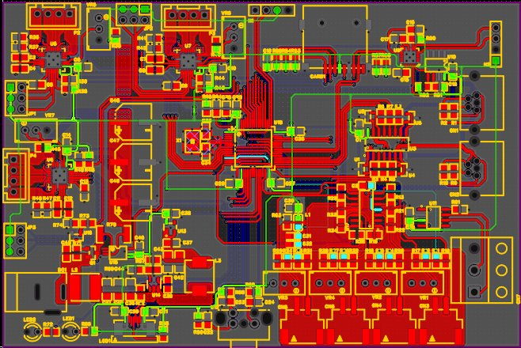
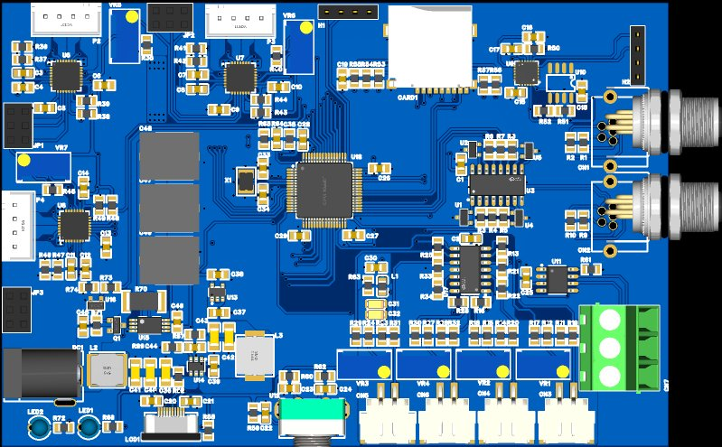
实习作品
实习期间完成的 PCB 设计练习：核心板布线（Type-C 供电 / 下载、电源指示、排针接口分区布置），以及 BGA 封装的扇出与等长走线练习，熟悉多层板叠层规划、差分对与蛇形等长的布线要点。
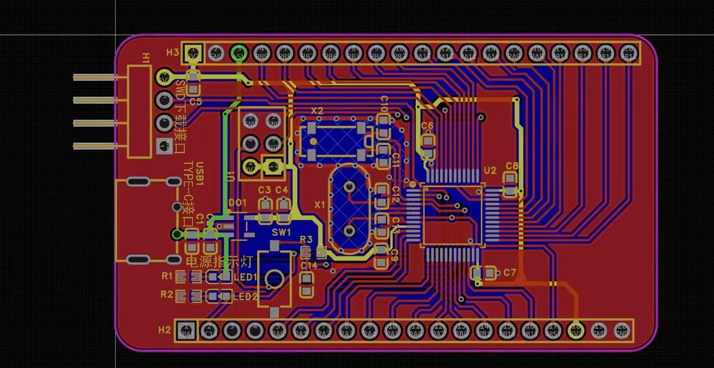
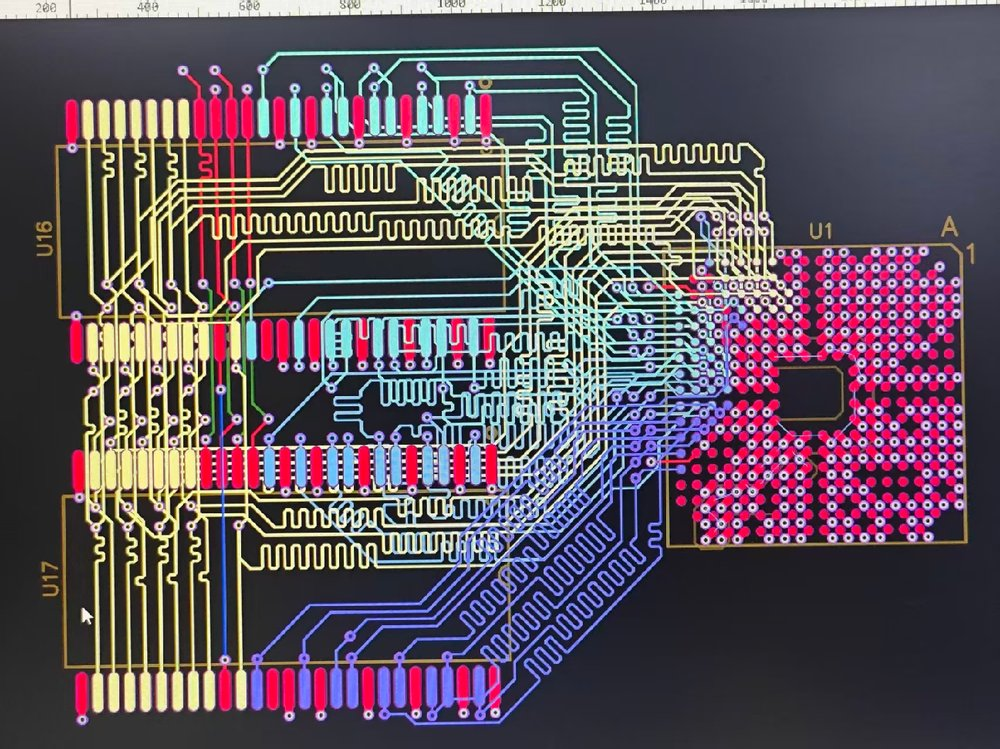
04 复刻开源作品
STM32F1 无人机飞控
基于 STM32F103 的四轴飞行器主控板，复刻开源方案并独立完成打板、焊接与测试。单板集成 STM32 最小系统、USB 转 TTL 调试电路、Type-C 接口、MPU6050 六轴姿态传感器与四路 MOS 电机驱动，覆盖飞控所需的全部核心功能。
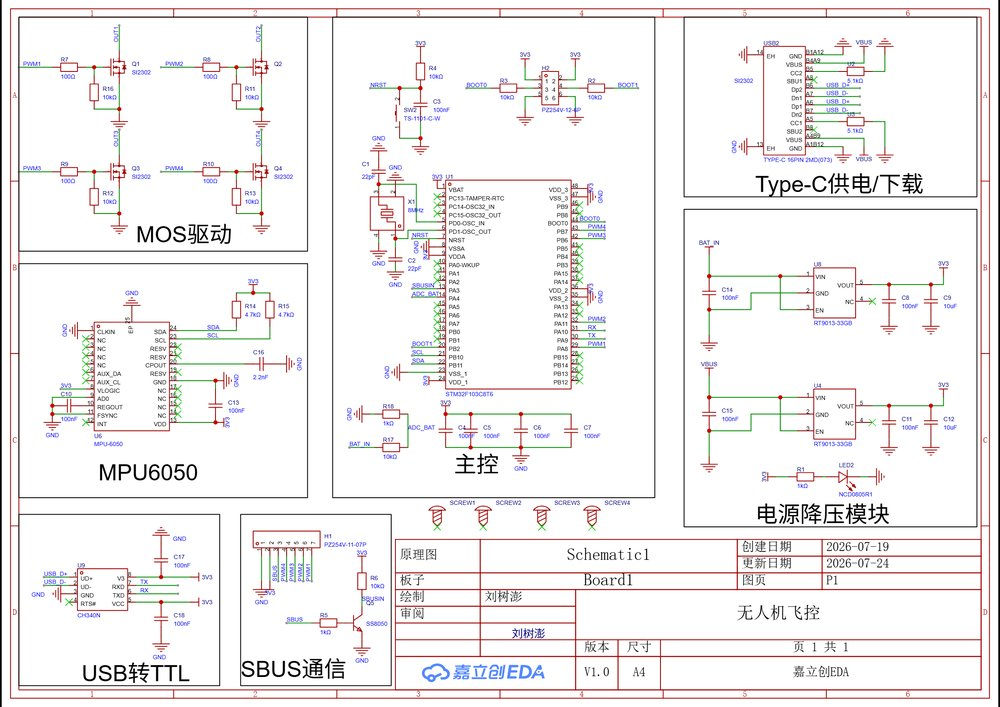
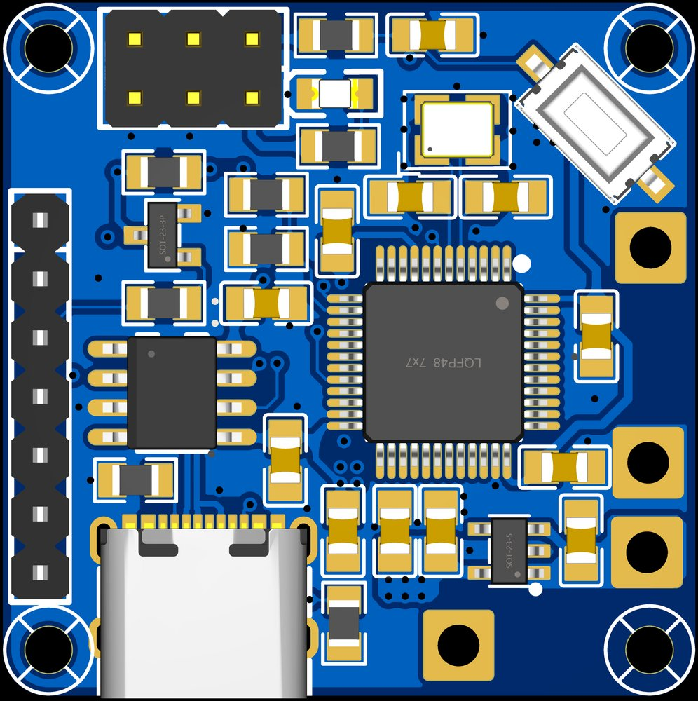
STM32F405 核心板
基于 STM32F405（168MHz Cortex-M4F）的核心控制板，用于高主频 MCU 最小系统设计实践。覆盖 DCDC 降压、电源去耦、晶振、复位、BOOT 配置、SWD 调试接口、USB 转串口与 TF 卡等关键环节，完成原理图、PCB 与焊接调试全流程。
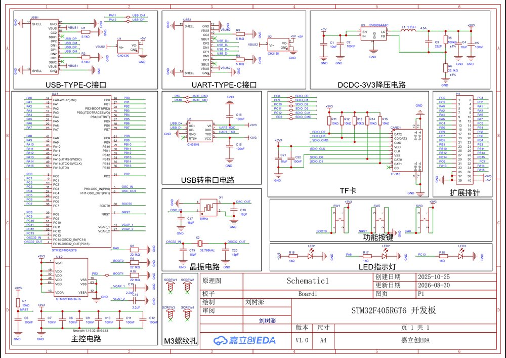
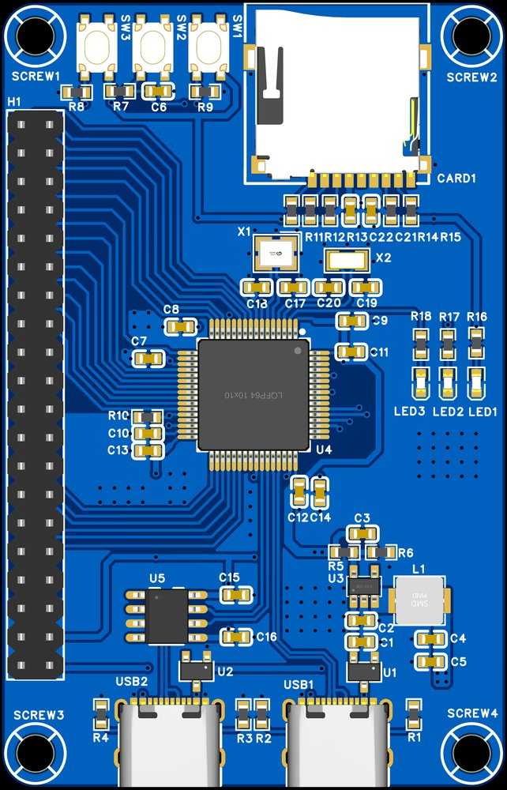
NFC 卡片
使用复旦微电子 CUID 芯片，在 PCB 上设计矩形螺旋线圈天线，基于 13.56MHz 频段的近场电磁感应原理实现与 NFC 读写器的互感通信。完成线圈参数设计与实测调试，刷卡识别稳定，可作为名片 / 门禁卡等场景使用；通过该实践掌握了射频近场耦合的基本原理与 PCB 天线设计要点。
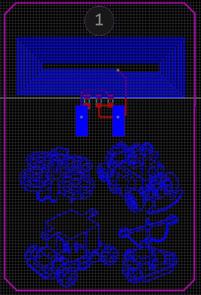
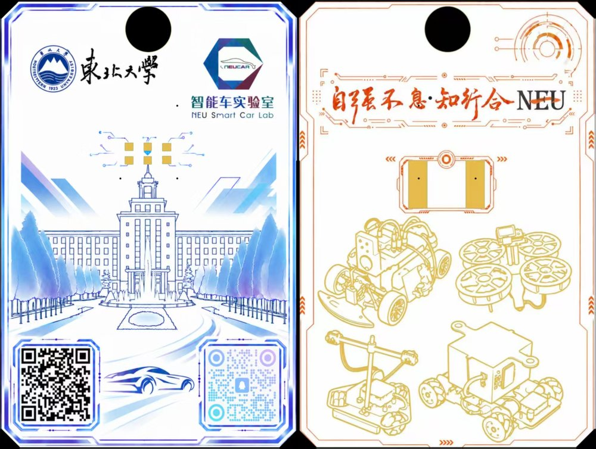
桌面机器狗
复刻开源桌面机器狗项目，采用 ESP8266 作为主控，单板集成电压采集、OLED 屏幕接口、舵机接口、电源降压模块与扩展接口。独立完成结构组装、舵机接线与运动控制调试，实现步态行走与动作控制，熟悉多舵机协同控制与电池供电系统的整机组装调试流程。
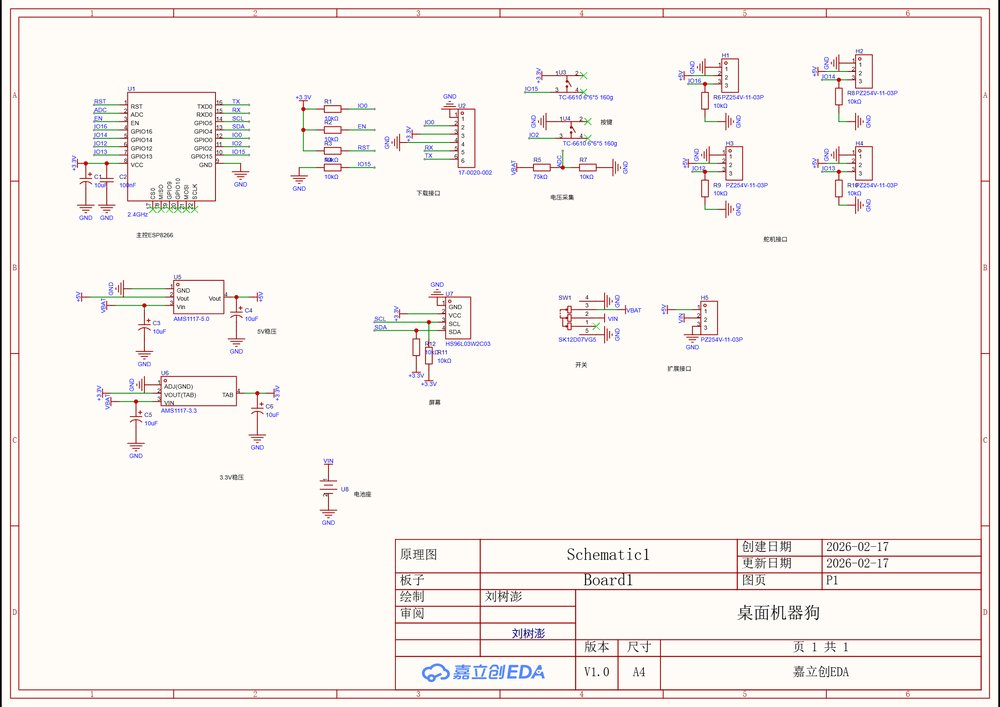
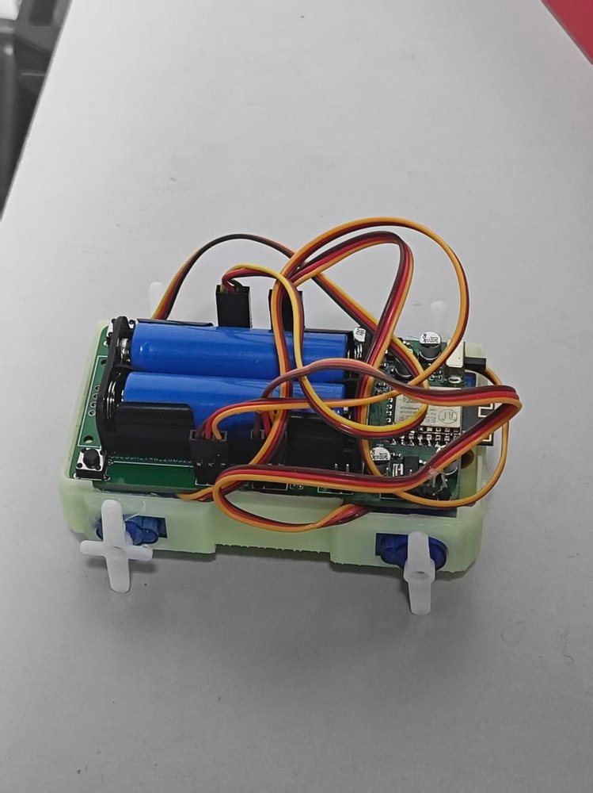
硬件设计作品图库
每个工程的完整原理图与 PCB 各层视图，配图注说明。
进入图库 →05 奖项与证书
- 全国大学生智能汽车竞赛 · 室外赛 全国一等奖
- 全国大学生智能汽车竞赛 · 完全模型组 全国二等奖
- 全国大学生机械创新设计大赛 全国二等奖
- 全球校园人工智能算法精英赛 全国二等奖
- 中国机器人及人工智能大赛 全国三等奖
- 第十九届先进机器人及仿真技术大赛 全国三等奖
- “建行杯”辽宁省大学生创新大赛 银奖
- 中国电子学会 PCB Layout 中级工程师专业技术证书
- 大学英语六级证书（CET-6）